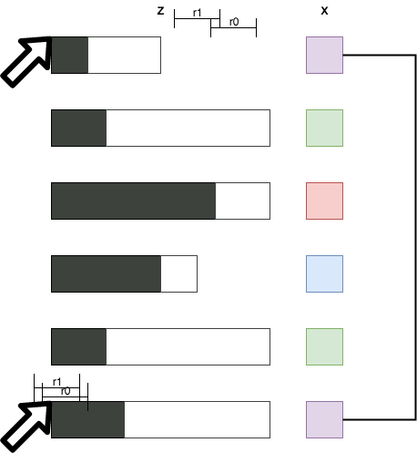

Your browser doesn't support the features required by impress.js, so you are presented with a simplified
version of this presentation.
For the best experience please use the latest Chrome , Safari or Firefox browser.
Propensity Scores
- The Central Role of the Propensity Score in Observational Studies for Causal Effects, Rosenbaum and Rubin, 83
- Other works by Vovk, Cover, Rissanen
Introduction
Definitions
- \(n\) study participants
- Two treatments, \(1\) and \(0\)
- \(z_i = 1\) (\(z_i = 0\)) if participant \(i\) received (didn't receive) treatment
- \(x_i\) a vector of observed pre-treatment covariates
- \(r_{1, i}\) and \(r_{0, i}\) are the response of participant \(i\).
Goal
Assess
$$
E\left[r_1\right] - E\left[r_0\right].
$$
Given
$$
E\left[r_1 \;|\; z=1\right] - E\left[r_0 \;|\; z=0\right].
$$
Observational Setup Challenges
- \(r_1, r_0 \not\perp z\)
- Example: long/expensive smoking-addiction treatment
- \(z \not\perp x\)
- Example: adds targeting an ineffective age-group
Strongly-Ignorable Assignment
Need some minimal requirements for avoiding GIGO.
An assignment \(z\) is
strongly ignorable if
- \(r_1, r_0 \perp z \;|\; x\)
- \(0 \lneq P(z = 1 \;|\; x) \lneq 1 \)
Theory
Balancing Scores & Propensity Scores
- A covariate function \(b(x)\) is a balancing score if
$$
r_1, r_0 \perp x \;|\; b(x).
$$
- The propensity score is the covariate function
$$
e(x) = P(z = 1 \;|\; x).
$$
Theorem: Relationship Balancing Scores & Propensity Scores
- Any refinement \( x \subseteq b(x) \subseteq e(x)\) is a balancing score.
- Any balancing score is a refinement \( x \subseteq b(x) \subseteq e(x)\).
Theorem: Balancing Scores Preserve Assignment Strongly-Ignorability
$$
r_1, r_0 \perp z \;|\; x, \;\; 0 \lneq P(z = 1 \;|\; x) \lneq 1
\Rightarrow
\\
r_1, r_0 \perp z \;|\; b(x), \;\; 0 \lneq P(z = 1 \;|\; b(x)) \lneq 1
$$

Applications
Conclusions
Counterfactual
Something contrary to the fact, specifically, contrary to an event that happened.
-
The fact is that \(z_i = 1\) or \(z_i = 0\), but we would like to assess both \(y_i \;|\; z = 1\) and \(y_i \;|\; z = 0\).
MCAR